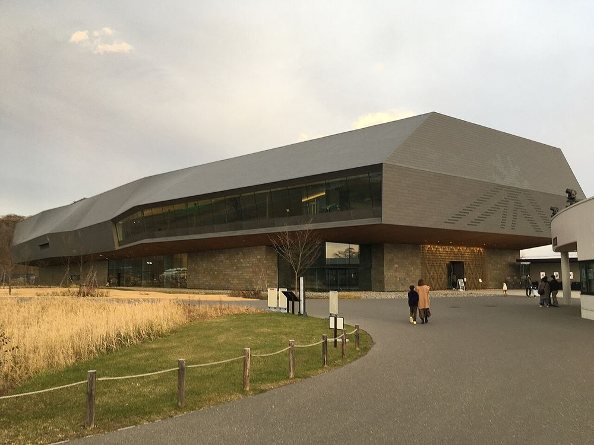
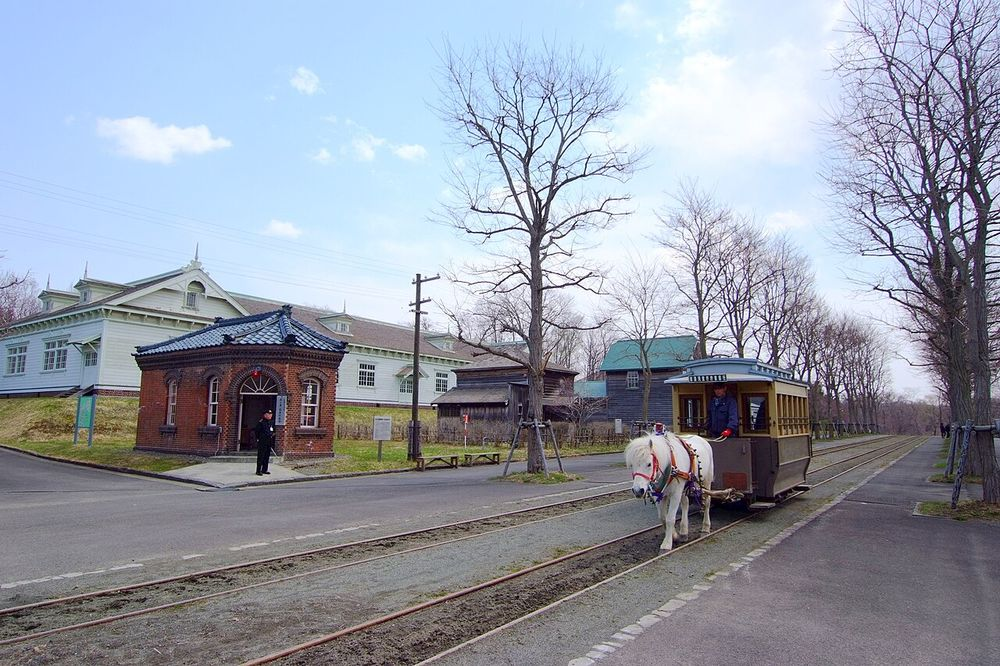

Sapporo and Hakodate in Winter
Six days by train in December: Sapporo’s Meiji landmarks and Christmas lights, the Historical Village of Hokkaido, Otaru’s canal and stained glass, the national Ainu museum at Upopoy, and Hakodate’s star fort, churches and night view.
- Length
- 6 days
- Distance
- about 370 km by train
- Best time
- Dec (lights) / Feb (snow festivals)
- Per person, excl. flights
- from CNY 5,630
Researched November 2026 for a December trip, and cross-checked with a second research tool. Hours and prices change, so check before you go. Exchange rate ¥1 ≈ CNY 0.0417 (27 Nov 2026).
Why Sapporo and Hakodate
For history and winter atmosphere without a car: Meiji-era Sapporo, an open-air museum of settler buildings, Otaru’s canal and stained glass, the national Ainu museum, and Hakodate’s star fort and harbour churches, joined by the Hokuto limited express. Only two hotels, and the suitcases travel ahead by courier.
In December: cold and often snowy. Sapporo is about 0–2°C by day and −4 to −6°C at night; Hakodate is a little milder but windier. The sun sets about 16:00, so evenings are for lights: both cities keep their Christmas illuminations and markets until 25 December, Otaru’s canal has blue winter lights, and Goryokaku’s moat is lit at dusk. Crowds and prices are well below February’s snow-festival peak.
Best time to go: mid December, up to Christmas, is best for this plan: the Sapporo and Hakodate Christmas lights and markets run until 25 December, snow usually covers the Historical Village and Otaru, and it is far quieter and cheaper than February. Early December is quieter still, with less snow. Early February is the other peak: the Sapporo Snow Festival and the Otaru Snow Light Path, the deepest snow and the highest prices. Avoid the New Year week (closures and peak fares); late February to March is thawing, grey and cheaper.
The route: New Chitose Airport → Sapporo (3 nights, with the Historical Village and Otaru as day trips) → Shiraoi for Upopoy → Hakodate (2 nights) → Hakodate Airport. 6 days and about 370 km by train; no car needed.
Highlights
- Sapporo’s Meiji landmarks, the Clock Tower and the Red Brick government office, with the White Illumination and the Christmas market at Odori
- The Historical Village of Hokkaido: more than 50 settler-era buildings in the snow
- Otaru: the canal at dusk, Tiffany windows at the Nitori Art Base, and Tatsuno Kingo’s Bank of Japan branch
- Upopoy, the National Ainu Museum and Park, on the way south
- Hakodate: the star fort from Goryokaku Tower, the Motomachi churches, the Christmas Fantasy fireworks and the night view from Mount Hakodate
- Hokkaido food: Genghis Khan lamb, miso ramen, Otaru sushi, Hakodate squid and the morning market
Good to know
- Upopoy and most museums close on Mondays, so don’t put Day 2 or Day 4 on a Monday. Otaru’s Nitori Art Base and Bank of Japan museum close on Wednesdays, so keep Day 3 off a Wednesday.
- Send the suitcases from Sapporo to Hakodate by courier on the evening of Day 2 and travel light on Days 3 and 4 (see Trains and luggage).
- Book ahead: Isezushi in Otaru, Sushi Saiko, Kihara, and the Hokuto seats (all reserved).
- Snow can delay the Hokuto and wind can stop the Mount Hakodate ropeway, so keep a spare evening in Hakodate.
Two ways to do it
💰 Best value
- Stay: Cross Hotel Sapporo (about ¥26,300 (CNY 1,100) a night for two with breakfast; top-floor bath), then Hakodate Kokusai Hotel (about ¥36,000 (CNY 1,500) a night with breakfast; onsen with an open-air bath).
- Eat: Daruma lamb, miso ramen and soup curry in Sapporo, Isezushi in Otaru, squid at Ikasei and shio ramen at Ajisai in Hakodate.
- About CNY 5,630–6,090 per person excluding flights.
✨ Best experience
- Stay: Sapporo Grand Hotel (opened 1934; about ¥28,800 (CNY 1,200) a night with breakfast), then La Vista Hakodate Bay (rooftop onsen over the harbour; about ¥65,000–70,000 (CNY 2,710–2,920) a night, room only).
- Add: omakase at Sushi Saiko, a sushi lunch at Kihara in Yunokawa, the Red Brick octagon-tower lookout and the Sapporo Beer Museum.
- About CNY 8,370–9,250 per person excluding flights.
Same route and trains for both; only hotels, a few meals and the extras change.
Route map
● numbered: overnight stops in order ● stop on a travel day ● day trip from the base (dashed). Tap a point for its days. ✈️ airport. The whole trip is by train: lines are straight lines between stops, not the rail route.
Itinerary
Days start at about 10:00 and keep to one main sight per half day. Each day has an Add if you like line if you want more.
Afternoon: the Clock Tower (¥350 (CNY 15), to 17:10), then the Red Brick former Hokkaido Government Office (¥300 (CNY 15), open to 21:00).
Dusk: the White Illumination along Odori Park (from 16:30) and the Munich Christmas Market (to 21:00; both until 25 December).
Dinner: Genghis Khan lamb at Daruma Honten (no bookings; arrive 17:00–17:30 to beat the queue).
Add if you like: the Red Brick octagon-tower lookout (¥1,200 (CNY 50), seven people a slot, booked online up to 30 days ahead).
Morning: the Historical Village of Hokkaido (¥1,000 (CNY 40); allow 2–2.5 hours; the horse sleigh runs only at weekends and on holidays from mid-December).
Lunch: bus back to Shin-Sapporo for shoyu ramen at Shoyuya Honten in Sun Piazza.
Afternoon: the Hokkaido Museum, next to the village (¥800 (CNY 35); last entry 16:00). It reopened after renovation in 2026 but had not published its December details when we checked, so look a week before. If it is closed, see the Hokkaido Museum of Modern Art in central Sapporo instead (¥510 (CNY 20)).
Evening: hand the suitcases to the hotel front desk for courier delivery to Hakodate on Day 4 (see Trains and luggage).
Add if you like: the Sapporo Beer Museum on the way back (¥1,000 (CNY 40); last entry 17:30).
Morning: walk downhill from Minami-Otaru: the Music Box Museum (free), then Sakaimachi street and Kitaichi Glass.
Lunch: sushi at Isezushi (book a 12:00–13:00 table).
Afternoon: the canal, the Nitori Art Base (Tiffany and English church stained glass, ¥1,200 (CNY 50)) and the Bank of Japan Otaru Museum (free). Both close on Wednesdays. Stay for the canal lights at dusk (sunset about 16:00).
🚆 Otaru → Sapporo · 34 km · about 35 min back about 17:00. Dinner: miso ramen at Keyaki in Susukino.
Add if you like: the Nikka Whisky Yoichi distillery, 25 minutes beyond Otaru (booking needed; closed 23 Dec–7 Jan), but only if you skip the Otaru museums.
Midday and afternoon: Upopoy, the National Ainu Museum and Park, about 12:10–15:30 (¥1,200 (CNY 50), or ¥1,000 (CNY 40) online). Performance times go up on the day, so photograph the board at the entrance. Lunch at the café inside.
🚆 Shiraoi → Hakodate · 226 km · about 2h45 for example Shiraoi 15:47 → Hakodate 18:30.
Dinner: squid at Ikasei by Hakodate station.
Add if you like: take the earlier Hokuto (Shiraoi 14:29 → Hakodate 17:13) to catch tonight’s 18:00 Christmas Fantasy fireworks as well; it trims Upopoy to two hours.
Morning: Goryokaku Tower (¥1,200 (CNY 50)) for the star fort from above, then the Magistrate’s Office inside the fort (¥500 (CNY 20)).
Lunch: sushi at Kihara in Yunokawa (book for 12:00; about 15 minutes by tram), or shio ramen at Ajisai by the tower.
Afternoon: tram to Motomachi, about 14:00–16:00: the Orthodox and Catholic churches, the Old Public Hall and the Old British Consulate, and the Museum of Northern Peoples.
Evening: the Christmas Fantasy fireworks at 18:00 by the red-brick warehouses, then the Mount Hakodate ropeway for the night view (¥1,800 (CNY 75) return; last car up 20:30). Dinner near the station.
Add if you like: the Goryōsei no Yume moat lights at Goryokaku (sunset to 19:00, free) if you are back that way at dusk. A tram day pass (¥800 (CNY 35)) pays for itself from three rides.
Airport bus from the station, about 20 minutes (¥700 (CNY 30)). Fly home from Hakodate via Tokyo Haneda: on one ticket, the bags go through; on separate tickets, allow 2.5–3 hours at Haneda to collect and re-check them.
Add if you like: a last walk through the Kanemori red-brick warehouses (shops from 9:30) before the bus.
Bad weather: if snow stops the Hokuto on Day 4, take a later train and skip Upopoy. If wind stops the ropeway on Day 5, try again on Day 4’s evening or use the Goryokaku Tower view instead.
Top sights





.jpg){kind=link}

_-_panoramio_(4).jpg){kind=link}
- Sapporo Clock Tower: the 1878 drill hall of the Sapporo Agricultural College, the city’s Meiji emblem; ¥350 (CNY 15).
- Red Brick office (Former Hokkaido Government Office): an 1888 neo-baroque brick building, fully reopened in 2025 with displays on the colonial office, the Ainu and the northern islands; ¥300 (CNY 15), octagon tower ¥1,200 (CNY 50).
- Historical Village of Hokkaido: a 54-hectare open-air museum of more than 50 relocated Meiji to early Shōwa buildings; ¥1,000 (CNY 40).
- Hokkaido Museum: the prefecture’s history, from prehistory through Ainu culture to settler life; ¥800 (CNY 35).
- Otaru: the 1923 canal and its stone warehouses, Kitaichi Glass in an 1891 herring warehouse lit by oil lamps, the Nitori Art Base in four former banks and warehouses, and the Bank of Japan branch by Tatsuno Kingo, architect of Tokyo Station (free).
- Upopoy, Shiraoi: Japan’s national centre for Ainu culture (2020): museum, a traditional village, dance and crafts; ¥1,200 (CNY 50).
- Goryokaku: the 1864 star fort, last stand of the Ezo Republic in 1869; the tower (¥1,200 (CNY 50)) and the rebuilt Magistrate’s Office (¥500 (CNY 20)).
- Motomachi, Hakodate: the 1916 Orthodox church, the Catholic church, the 1910 Old Public Hall and the Old British Consulate; a two-venue ticket is ¥500 (CNY 20).
- Mount Hakodate: the classic night view, by ropeway only in winter (the road is closed to cars); ¥1,800 (CNY 75) return. The summit is crowded for an hour or two after sunset.
On in December 2026
- Sapporo White Illumination, Odori Park: 16:30–22:00 until 25 December (the station-avenue lights carry on into February). Free.
- Munich Christmas Market, Odori Park: 11:00–21:00 until 25 December. Free entry; stalls are cashless.
- Hokkaido Museum of Modern Art: the collection show My Ways of Making (¥510 (CNY 20)) to 20 December, and the Shindoten 70th-anniversary exhibition (¥600 (CNY 25)) from 10 December; closed 21–28 Dec between exhibitions.
- Otaru Canal: blue winter LED lights from November to January, with the gas lamps lit from sunset. The Snow Light Path festival is in February, not December.
- Nitori Art Base, ukiyo-e museum: a Saitō Kiyoshi print exhibition from 12 December (¥1,400 (CNY 60)).
- Historical Village of Hokkaido: winter hands-on programmes through December; the horse sleigh runs at weekends and on holidays from mid-December, snow permitting.
- Hakodate Christmas Fantasy, Kanemori red-brick warehouses: a giant tree on the water, lit from 16:30 every evening until 25 December, with fireworks at 18:00 (weather permitting). Free.
- Goryōsei no Yume: the Goryokaku moat lit from sunset to 19:00, from December to the end of February. Free.
- Hokkaido Museum of Art, Hakodate: closed between exhibitions in mid-December (14–21 Dec, between exhibitions); the next show opens on 22 December.
- Upopoy: daily dance and epic-chant performances all winter (times posted on the day). No winter illumination had been announced for 2026/27.
Museums
| Museum | Hours | Closed | Entry |
|---|---|---|---|
| Sapporo Clock Tower | 8:45–17:10 | 1–3 Jan (New Year holiday) | ¥350 (CNY 15) |
| Red Brick office | 8:45–21:00, last entry 20:30 | 29 Dec–3 Jan | ¥300 (CNY 15); tower ¥1,200 (CNY 50) |
| Sapporo Beer Museum | 11:00–18:00, last entry 17:30 | 31 Dec | ¥1,000 (CNY 40) |
| Hokkaido Museum of Modern Art | 9:30–17:00, last entry 16:30 | Mondays; 21–28 Dec (between exhibitions); New Year | ¥510 (CNY 20) |
| Historical Village of Hokkaido | 9:00–16:30, last entry 16:00 | Mondays; 29 Dec–3 Jan | ¥1,000 (CNY 40) |
| Hokkaido Museum | 9:30–16:30, last entry 16:00 | Mondays; 29 Dec–3 Jan; check December | ¥800 (CNY 35) |
| Nitori Art Base | 10:00–17:00, last entry 16:30 | Wednesdays (Nov–Apr); New Year | stained glass ¥1,200 (CNY 50); five-museum pass ¥3,500 (CNY 150) |
| Bank of Japan Otaru Museum | 10:00–17:00, last entry 16:30 | Wednesdays; 29 Dec–5 Jan | Free |
| Otaru Music Box Museum | 9:00–18:00 | Open daily | Free |
| Nikka Whisky Yoichi (25 min beyond Otaru) | Guided tours about 9:30–14:30, booking needed | 23 Dec–7 Jan | Free tour (check when booking) |
| Upopoy | 9:00–17:00; park last entry 16:00 | Mondays; 28 Dec–4 Jan | ¥1,200 (CNY 50); ¥1,000 (CNY 40) online |
| Goryokaku Tower | 9:00–18:00, last ticket 17:50 | Open daily | ¥1,200 (CNY 50) |
| Hakodate Magistrate’s Office | 9:00–17:00, last ticket 16:45 | 31 Dec–3 Jan | ¥500 (CNY 20) |
| Old Public Hall of Hakodate Ward | 9:00–17:00 | 31 Dec–3 Jan | ¥300 (CNY 15) |
| Old British Consulate | 9:00–17:00 | 31 Dec–1 Jan | ¥300 (CNY 15) |
| Museum of Northern Peoples | 9:00–17:00 | 31 Dec–3 Jan; some internal days, so phone ahead | ¥300 (CNY 15) |
| Hakodate Orthodox Church | 10:00–16:00 (Sundays from 13:00) | Visits paused from 25 Dec to the end of February | ¥200 (CNY 10) donation |
| Mount Hakodate Ropeway | 10:00–21:00, last car up 20:30 | Stops in strong wind | ¥1,800 (CNY 75) return |
Motomachi combined tickets: two venues ¥500 (CNY 20), three ¥720 (CNY 30), all four ¥840 (CNY 35). Most museums here close on Mondays.
Where to eat
Tabelog 3.68 · 2,050 reviews badges are Tabelog scores: 3.0 is average, 3.5+ very good. Read from Tabelog listings in late November 2026. Our bar is 3.4+ and 50+ reviews; anything below is marked. 💰 and ✨ mark where the two plans differ.
New Chitose Airport
- Lunch: Hokkaido Ramen Dojo in the domestic terminal (3F), ten ramen shops side by side, about ¥1,000–1,500 (CNY 40–65); a walkway links it to the international terminal. Not checked against our Tabelog bar.
Historical Village and Shin-Sapporo
- Lunch: Shoyuya Honten, Sun Piazza Tabelog 3.59–3.60, a Hokkaido ramen Hyakumeiten shop right at Shin-Sapporo subway exit 3, ¥1,000–1,500 (CNY 40–65); no bookings. The Historical Village has only simple food.
Sapporo
- Dinner, day 1: Jingisukan Daruma Honten Tabelog 3.68 · 2,050 reviews, Genghis Khan lamb on a domed grill, ¥3,000–5,000 (CNY 130–210); 17:00 to late, no bookings, so come at 17:00–17:30. Shorter queue: Daruma 4·4 Tabelog 3.53 · 821 reviews.
- Dinner, day 2: ✨ Sushi Saiko Tabelog 3.60–3.75 · 84 reviews, a ten-seat counter serving Hokkaido fish, omakase ¥22,000 (CNY 920) plus 10% service; bookings only (TableCheck), closed Sundays and holidays. 💰 Soup curry at GARAKU Tabelog 3.43 · 159 reviews, ¥1,500–2,500 (CNY 65–100), or crab kaiseki at Hyosetsu no Mon Tabelog 3.54 · 298 reviews, ¥10,000–15,000 (CNY 420–630) (closed one irregular day a month, so phone first).
- Dinner, day 3: Keyaki, Susukino Tabelog 3.70 · 3,200 reviews, vegetable-rich miso ramen, ¥1,100–1,500 (CNY 45–65); no bookings, expect an outdoor queue. Or Sumire Susukino Tabelog 3.58 · 2,100 reviews.
Otaru
- Lunch: Isezushi Tabelog 3.67–3.70 · 760 reviews, counter sushi with Shakotan uni and winter fish, about ¥5,000–10,000 (CNY 210–420); closed Wednesdays and some Tuesdays. Book by phone up to two months ahead (from 11:00) or online through JPNEAZY (10–15% fee). Or Otaru Masazushi Honten Tabelog 3.59 · 1,084 reviews, ¥3,000–6,000 (CNY 130–250); no-booking fallback: Isezushi’s branch inside Otaru station Tabelog 3.54–3.57.
Shiraoi (Upopoy)
- Lunch: the café-restaurant inside Upopoy, Ainu-style set meals Tabelog 3.06–3.24 (below our bar, but you don’t have to leave the park). Shiraoi beef restaurants need a taxi, so they don’t fit this day.
Hakodate
- Dinner, day 4: Ikasei Daimon Tabelog 3.48–3.51 · 288 reviews by the station, squid sashimi (live when the catch allows), squid noodles and grilled squid, ¥5,000–8,000 (CNY 210–330); 17:00–23:30, open daily, bookable. Or Nebokke Tabelog 3.47–3.49 · 300 reviews, big local hokke, ¥4,000–5,000 (CNY 170–210).
- Lunch, day 5: ✨ Sushidokoro Kihara, Yunokawa Tabelog 3.62–3.65 · 433 reviews, omakase with winter Hakodate squid, uni and kelp-cured fish, about ¥10,000–15,000 (CNY 420–630) (Tabelog’s dinner band; lunch may be less); bookings only, by phone; closed Wednesdays and two irregular Tuesdays a month. 💰 Ajisai Honten Tabelog 3.62–3.65 · 2,100 reviews by Goryokaku Tower, clear shio ramen, ¥1,000–1,500 (CNY 40–65) (closed on the fourth Wednesday).
- Dinner, day 5: Uni Murakami’s station branch Tabelog 3.61 · 192 reviews, additive-free uni bowls, about ¥4,000–7,000 (CNY 170–290); 17:30–21:30, bookable. Or Nebokke (above).
- Brunch, day 6: Kikuyo Shokudo Honten Tabelog 3.49 · 1,428 reviews in the morning market, the original tomoe-don of uni, salmon roe and scallop, ¥2,000–4,000 (CNY 85–170); 6:00–13:30 in winter, open daily. Or Uni Murakami Honten Tabelog 3.58 · 1,255 reviews, ¥4,000–7,000 (CNY 170–290); no bookings at weekends, closed Wednesdays.
Shopping
- Odori Park: the Munich Christmas Market for ornaments, mulled wine and German snacks (until 25 December).
- Nijo Market, the city’s market since the 1890s: crab, salmon roe and dried seafood; about 7:00–18:00, shop by shop.
- Sapporo Station malls and department stores: Hokkaido sweets and gifts to send home or carry on the train.
- Sakaimachi street, Otaru: Kitaichi Glass and other glass studios, the Music Box Museum’s shops, and patisseries; most shops 9:00–18:00.
- Upopoy shop: Ainu embroidery, wood carving and books on Ainu culture.
- Kanemori Red Brick Warehouses: shops and cafés in 1887–1909 bonded warehouses; 9:30–19:00, open all year.
- Hakodate Morning Market: squid, crab, kelp and dried seafood; from early morning to about 14:00.
- Hakodate Airport: last-minute Hokkaido sweets and seafood gifts before the flight.
Where to stay
Room for two, including taxes, seen on Booking.com in late November 2026 for a mid-December weekday stay; the city accommodation tax may be added at the hotel. Ask both hotels about sending and receiving bags by courier.
Cross Hotel Sapporo
8.8About ¥26,300 (CNY 1,100) a night with breakfast. Top-floor large bath with an open-air section; five minutes from JR Sapporo and from Odori.
Sapporo Grand Hotel
8.8About ¥28,800 (CNY 1,200) a night with breakfast. Opened in 1934 as Hokkaido’s first Western-style hotel; no large bath. Its FAQ says there is no airport or station bag delivery, so confirm hotel-to-hotel courier sending.
Keio Prelia Hotel Sapporo
8.9About ¥24,000 (CNY 1,000) a night, room only. Free public bath; luggage forwarding offered. Smaller rooms (20 m²).
Hakodate Kokusai Hotel
8.3About ¥36,000 (CNY 1,500) a night with the seafood breakfast. Natural onsen with an open-air bath on the top floor; eight minutes from the station, five from the morning market.
La Vista Hakodate Bay
9.0 (Trip.com)About ¥65,000–70,000 (CNY 2,710–2,920) a night, room only (seen on Rakuten; not on Booking.com). Rooftop open-air onsen over the harbour and a well-known breakfast; three minutes from the tram.
La’gent Stay Hakodate Ekimae
8.7About ¥48,200 (CNY 2,010) a night, room only (only a family room was left). Rooftop onsen and sauna; Yamato courier service listed.
Budget
Per person, two sharing a room, excluding flights. Estimated November 2026. Exchange rate ¥1 ≈ CNY 0.0417 (27 Nov 2026).
- 💰 Best value: about CNY 5,630–6,090 (hotels 3,150 · trains, buses and luggage forwarding 840–880 · food 1,250–1,670 · entry fees 390)
- ✨ Best experience: about CNY 8,370–9,250 (hotels 4,510–4,720 · trains, buses and luggage forwarding 840–880 · food 2,540–3,170 · entry fees and extras 480)
Trains: JR fares come to about ¥15,000 (CNY 630) per person (airport train, Otaru return, Shin-Sapporo return and the two Hokuto legs). Hotels: both plans include breakfast in Sapporo; La Vista is room only. Not included: flights, breakfasts at La Vista, the city accommodation tax, shopping, travel insurance, and a 10–15% contingency.
Trains and luggage
Trains
- New Chitose Airport → Sapporo: Rapid Airport, about 37 minutes, every 12 minutes or so, ¥1,230 (CNY 50).
- Sapporo ⇄ Otaru: rapid trains about 32–35 minutes, locals about 45, ¥800 (CNY 35) each way. Yoichi is about 25 minutes beyond Otaru.
- Historical Village: JR or the Tōzai subway to Shin-Sapporo, then JR Hokkaido Bus 新22 from stand 10 (about 15 minutes, about ¥210 (CNY 10)).
- The Hokuto limited express (Sapporo → Hakodate, about 3h45 end to end): all seats reserved. Nine of the eleven daily trains stop at Shiraoi, roughly hourly. Useful pair for Day 4: Sapporo 10:56 → Shiraoi 11:57, then Shiraoi 15:47 → Hakodate 18:30 (earlier 14:29 → 17:13; later 16:47 → 19:29). Times are from the timetable in late November 2026.
- Fares: Sapporo → Hakodate straight through is ¥9,770 (CNY 410) with a reserved seat. Stopping at Shiraoi means two tickets, estimated at about ¥3,700–4,000 (CNY 150–170) and ¥8,000–8,500 (CNY 330–350). Book on JR East’s Eki-net (Tokuda-ne discounts open 14 days ahead) or at a JR ticket office.
- Rail pass: not worth it. This trip’s JR fares come to about ¥15,000 (CNY 630) per person; the 5-day Hokkaido Rail Pass is ¥22,000 (CNY 920).
- Snow and service: the Hokuto’s line was washed out in late summer 2026 and runs again, with some speed limits. In winter, heavy snow can delay or cancel trains: check JR Hokkaido’s service status on the morning of Day 4.
- Hakodate: trams reach the station, Goryokaku, Yunokawa, Motomachi and the ropeway; a day pass is ¥800 (CNY 35). The Goryokaku Tower shuttle bus is ¥300 (CNY 15), and the airport bus ¥700 (CNY 30) (about 20 minutes).
- No car needed. If a day ever needs one, rent at Sapporo or Hakodate station and return it there. Foreign licences need a 1949 Geneva-type International Driving Permit, or for some countries an official JAF translation.
Sending your suitcases ahead (takkyubin)
Japan’s door-to-door courier carries suitcases between hotels, and almost every hotel front desk handles it: Yamato Transport (TA-Q-BIN, the black-cat logo), Sagawa Express or Japan Post (Yu-Pack). Here the bags go from the Sapporo hotel to the Hakodate hotel, so Days 3 and 4 are travelled light.
- When you book: note the Hakodate hotel’s full address, postcode and phone number in Japanese.
- Day 1 or 2: ask the Sapporo front desk which carrier it uses and its pickup cut-off time.
- About two days before: email the Hakodate hotel that suitcases will arrive by courier for guests checking in on Day 4, and ask them to hold the bags.
- Evening of Day 2: hand the suitcases to the Sapporo desk, fill in the waybill with delivery on Day 4, and pay. Pickups are often around 10:00, so the night before is safest, and snow can add a day. Keep the receipt or tracking number.
- Days 3–4: track the bags on the carrier’s website.
- Day 4, check-in: collect them at the Hakodate desk, or find them in the room.
The waybill (送り状, okurijō): desk staff usually help. To (お届け先): the Hakodate hotel’s name, address, postcode and phone, with your name + 様 (宿泊者, guest) and the check-in date. Delivery date (お届け予定日): Day 4, time band 午前中 (morning). From (ご依頼主): your name, the Sapporo hotel’s address and a phone number. Contents (品名): 衣類 (clothes). Don’t send valuables, batteries or power banks, medicines you need that day, or passports.
Cost: priced by size (length + width + height) and weight, usually paid in cash. Yamato within Hokkaido: 140 size ¥2,090 (CNY 85), 160 size ¥2,410 (CNY 100), 180 size ¥3,030 (CNY 130). A medium suitcase is roughly ¥2,000–2,500 (CNY 85–100). Check the price at the desk.
Overnight bag for Days 3 and 4: a night’s clothes, toiletries, chargers, medicines, passport, and a warm layer for Upopoy, which is partly outdoors.
If courier isn’t possible: carry the suitcases on the Hokuto (luggage space at the ends of each car). Suitcases aren’t allowed in Upopoy’s paid area: use the large coin lockers at the entrance (¥500 (CNY 20), cash) or the tourist information desk at Shiraoi station (¥500 (CNY 20), 8:00–17:30). Going home needs nothing: Hakodate Airport is 20 minutes by bus.
Sources
Checked 28 November 2026, then cross-checked with a second research tool; conflicting points were settled on official sites. Restaurant scores come from Tabelog listings and may drift. Train times are from the late-November 2026 timetable; the two Shiraoi fares are estimates. Hotel scores are Booking.com guest reviews out of 10 (La Vista: Trip.com). Everything here is summarised in our own words. How this research is done →
- Sapporo: Clock Tower · Red Brick office · Hokkaido Museum · Historical Village · Sapporo Beer Museum · Museum of Modern Art · Christmas Market · White Illumination · Nijo Market
- Otaru: Nitori Art Base · Bank of Japan Otaru Museum · Kitaichi Glass · Music Box Museum · Nikka Yoichi
- Upopoy: hours · programme · lockers
- Hakodate: Goryokaku Tower · Magistrate’s Office · Orthodox Church · Mount Hakodate Ropeway · Kanemori warehouses · Christmas Fantasy · Morning Market · Museum of Art, Hakodate
- Getting around: JR Hokkaido · Hokkaido Rail Pass · Eki-net · Hakodate trams · Hakodate Bus · Hakodate Airport bus · Yamato rates · Haneda transfers
- Food and stays: Tabelog listings · Booking.com (prices and guest scores, late November 2026) · Rakuten Travel and Trip.com for La Vista
- Photos (Wikimedia Commons): see the credit under each image.